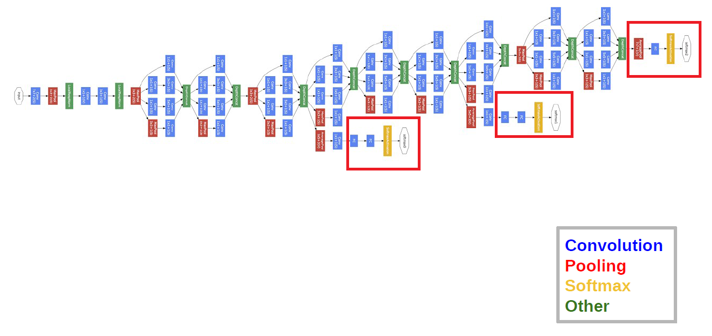

本篇论文是由Google公司、Magic Leap公司、北卡罗来纳大学和密歇根大学的Christian Szegedy, Wei Liu, Yangqing Jia, Pierre Sermanet, Scott Reed,Dragomir Anguelov, Dumitru Erhan, Vincent Vanhoucke, Andrew Rabinovich等人所作关于GoogLeNet的《Going Deeper with Convolutions》。该文章在2015年发表于CVPR。
Abstract
我们提出了一个名为“Inception”的深度卷积神经网结构，其目标是将分类、识别ILSVRC14数据集的技术水平提高一个层次。这一结构的主要特征是对网络内部计算资源的利用进行了优化。通过精心设计，我们增加了网络的深度和宽度，同时保持计算预算不变。为了优化质量，架构决策基于Hebbian原则和多尺度处理规则设计。在我们的ILSVRC14提交中使用的一个特定版本被称为GoogLeNet是一个22层的深层网络，其质量是在分类和检测的背景下评估的。
Introduction
在过去的三年中，由于深度学习和卷积网络的发展，我们的对象分类和检测能力有了显著的提高。一个令人鼓舞的消息是，大部分的进展不仅仅是更强大的硬件、更大的数据集和更大的模型的结果，而且主要是新思想、算法和改进的网络架构的结果。例如，在ILSVRC 2014竞赛中，除了使用同一竞赛的分类数据集进行检测外，并没有使用新的数据源。我们的GoogLeNet提交给ILSVRC 2014实际上使用了比获奖架构少12倍的参数Krizhevsky等人对两年前的进行了分析，结果明显更准确。在目标检测方面，最大的收益并不是来自于越来越大的深度网络的单纯应用，而是来自于深度架构与经典计算机视觉的协同，如Girshick等人的R-CNN算法。
另一个值得注意的因素是，随着移动和嵌入式计算的不断发展，我们算法的效率——尤其是它们的能力和内存使用——变得越来越重要。值得注意的是，本文提出的深层体系结构设计考虑的因素包括这个因素，而不是完全依赖于精确的数字。对于我们的大部分实验，模型计算量限制在预测时间内15亿次乘加运算左右，这让我们的实验并不仅仅是为了满足学术好奇心（而盲目提高精确度），而是可以在现实中使用，即使对于很大的数据集，开销也是合理的。
在本文中，我们将重点研究一种高效的用于计算机视觉的深度神经网络架构，称作Inception，它的名字来源于Lin等人在网络论文中结合著名的网络“我们需要更深入”的网络迷因。在我们的例子中，“deep”一词有两种不同的含义:首先，我们以“Inception模块”的形式引入了一个新的组织层次，同时也增加了网络深度。一般来说，我们可以把Inception模型看作是的逻辑顶点，同时从Arora等人的理论工作中获得灵感和指导。该架构的优点在ILSVRC 2014分类和检测挑战中得到了实验验证，其性能显著优于当前的技术水平。
从LeNet-5开始，卷积神经网络(CNN)通常有一个标准结构——堆叠的卷积层(可选的有标准化和最大池化)之后是一个或多个完全连接的层。这种基本设计的变体在图像分类文献中普遍存在，并在MNIST、CIFAR和ImageNet分类挑战中获得了迄今为止最好的结果。
对于较大的数据集，如Imagenet，最近的趋势是增加层数和层大小，同时使用dropout来解决过拟合问题。
尽管担心最大池化层会导致精确空间信息的丢失，但与相同的卷积网络架构也成功地用于定位、目标检测和人体姿态估计。
Serre等人受灵长类视觉皮层神经科学模型的启发，使用一系列不同大小的固定Gabor过滤器来处理多个尺度。我们在这里使用了类似的策略。然而，与固定的2层深度模型相反，Inception架构中的所有过滤器都是学习的。此外，先启层重复了许多次，导致了22层的深度模型GoogLeNet模型。
网络中的网络是Lin等人为了提高神经网络的表示能力而提出的一种方法。在他们的模型中，增加了1X1卷积层，增加了网络的深度。
我们在体系结构中大量使用这种方法。然而，在我们的设置中，1X1 卷积有双重目的:最关键的是，它们主要用作降维模块来消除计算瓶颈，否则将限制网络的大小。这不仅可以增加网络的深度，还可以在不影响性能的情况下增加网络的宽度。
最后，当前的目标检测技术是Girshick等人提出的基于卷积神经网络(R-CNN)的区域检测方法。R-CNN将整个检测问题分解为两个子问题:利用颜色和纹理等低层线索，以一种与类别无关的方式生成目标位置建议，并使用CNN分类器在这些位置识别目标类别。这种两阶段的方法利用了边界框分割的低水平线索的准确性，以及最先进的CNNs的强大分类能力。我们在提交检测时采用了类似的管道，但是在这两个阶段都进行了增强，比如多框预测用于更高的对象边界框回收，以及集成方法用于更好地对边界框建议进行分类。
Motivation and High Level Considerations
提高深度神经网络性能最直接的方法是增加其规模。这包括增加深度—神经网络的层数—以及宽度：每一层神经元的数量。这是一种训练高质量模型的简单和安全的方法，特别是考虑到有大量标记的训练数据可用。然而，这个简单的解决方案有两个主要缺点。
更大的尺寸通常意味着更多的参数，这使得扩大的网络更容易过度拟合，特别是当训练集中标记的例子数量有限时。这是一个主要的瓶颈，因为强标记数据集的获取既费力又昂贵，常常需要专业的人工评分员来区分各种细粒度的视觉类别，比如ImageNet中的那些
(即使在1000类ILSVRC子集中)，如图所示1.
网络规模一致增长的另一个缺点是计算资源的使用显著增加。例如，在深度视觉网络中，如果两个卷积层被链接，它们的滤波器数量的任何均匀增加都会导致计算量的二次增长。如果没有有效地使用增加的容量(例如，如果大多数权重最终接近于零)，那么大部分计算就会浪费。由于计算预算总是有限的，即使主要目标是提高性能的质量，有效地分配计算资源也比不加区别地增加规模好。
解决这两个问题的一个基本方法是引入稀疏性，用稀疏层替换完全连接的层，甚至在卷积内部也是如此。除了模仿生物系统，由于Arora等人的开创性工作，这还具有更坚实的理论基础的优势。他们的主要结果表明，如果数据集的概率分布可以用一个很大的、非常稀疏的深度神经网络来表示，那么通过分析前一层激活的相关统计量和聚类输出高度相关的神经元，可以逐层构建最优网络拓扑。虽然严格的数学证明需要非常强的条件，但事实证明这个命题与众所周知的Hebbian原理(神经元一起放电，连接在一起)相呼应的是，这一基本思想在实践中即使在不那么严格的条件下也适用。
不幸的是，当涉及到非均匀稀疏数据结构的数值计算时，当今的计算基础设施非常低效。即使算术运算的数量减少了100个，查找和缓存丢失的开销也将占主导地位:切换到稀疏矩阵可能不会有什么好处。通过使用稳定改进的高度调优的数值库，利用底层的微小细节，允许极其快速的密集矩阵乘法，进一步扩大了CPU或GPU硬件差距。此外，非均匀稀疏模型需要更复杂的工程和计算基础设施。目前大多数面向视觉的机器学习系统都是通过卷积来利用空间域的稀疏性。然而，卷积是作为到早期层中补丁的密集连接的集合来实现的。自[11]以来，ConvNets一直在特征维上使用随机稀疏连接表，以打破对称性，提高学习能力，然而，为了进一步优化并行计算，趋势又回到了与[9]的完全连接。目前最先进的计算机视觉体系结构具有统一的结构。大量的过滤器和更大的批处理大小允许高效地使用密集的计算。
这就提出了一个问题:是否还有希望实现下一个中间步骤:像理论所建议的那样，使用过滤器级别的稀疏性，但通过使用密集矩阵上的计算来利用我们当前的硬件的体系结构。关于稀疏矩阵计算的大量文献
(如[3])表明将稀疏矩阵聚类成相对密集的子矩阵，有利于稀疏矩阵乘法的竞争性能。在不久的将来，类似的方法将被用于非均匀深度架构的自动化构建，这似乎并不牵强。
Inception架构最初是一个案例研究，用于评估一个复杂的网络拓扑结构构建算法的假设输出，该算法试图近似于用于视觉网络的[2]所暗示的稀疏结构，并覆盖由密集的、现成的组件所假设的结果。尽管这是一项高度投机的工作，但与基于[12]的参考网络相比，早期观察到的收益并不大。稍加调整，差距就扩大了，事实证明，先开阶段作为[6]和[5]的基本网络，在定位和对象检测上下文中特别有用。有趣的是，尽管大多数最初的体系结构选择在分离中都受到了质疑和彻底的测试，但它们在本地却非常接近最优。但我们必须谨慎行事尽管Inception架构在计算机视觉方面已经取得了成功，但是这是否可以归因于引导它构建的指导原则仍然值得怀疑。确保这一点将需要更彻底的分析和验证。
Architectural Details
Inception架构的主要思想是考虑卷积视觉网络的最优局部稀疏结构是如何被现成的密集组件逼近和覆盖的。注意，假设平移不变性意味着我们的网络将由卷积构建块构建。我们所需要的是找到最优的局部结构，并在空间上重复它。Arora et al.[2]提出了一种分层结构，在这种结构中，我们应该分析最后一层的相关统计数据，并将它们分组为具有高相关性的单元。这些集群构成下一层的单元，并与上一层中的单元连接。我们假设前一层的每个单元对应于输入图像的某个区域，这些单元被分组到过滤器组中。在较低的层(靠近输入的层)中，相关单元将集中在局部区域。因此，我们最终会得到许多集群集中在一个区域，它们可以被下一层的1X1个卷积覆盖，就像[12]中建议的那样。然而，我们也可以预期，在更大的patch上，能够被卷积覆盖的空间分布更广的集群的数量会更少，而在越来越大的区域上，patch的数量会越来越少。为了避免补丁对齐问题，在先启架构的当前版本被限制为过滤大小为1X1、3X3和5X5;这个决定更多地是基于方便而不是必要性。这还意味着，建议的体系结构是所有这些层的组合，它们的输出过滤器库连接成一个输出向量，形成下一阶段的输入。此外，由于池操作对于当前卷积网络的成功至关重要，因此建议在每个这样的阶段添加一个可选的并行池路径也应该有额外的好处(参见图2(a))。
由于这些“先启模块”彼此堆叠在一起，它们的输出相关统计数据必然会有所不同:随着更高抽象的特性被更高的层捕获，它们的空间集中度预计会降低。这表明，当我们移动到更高的层时，3X3和5X5个卷积的比例应该增加。
一个大问题是，上述模型，至少是朴素形式（naive form）的模型，即使只有很有限个数的5×5卷积，其最上层卷积层的巨量过滤器的开支都会让人望而却步。一旦把池化层加进来，这个问题会变得更加严重：它们的输出过滤器个数与前面过程的过滤器个数相等。池化层输出与卷积层输出的合并会导致无法避免的每步输出暴增。即使是当这种结构覆盖了最优的稀疏结构，它可能依然还是很低效，从而导致少数几步的计算量就会爆炸式增长。
这就引出了Inception架构的第二个想法:明智地减少维度，否则计算需求将会增加太多。这是基于嵌入的成功:即使是低维嵌入也可能包含大量关于相对较大的图像补丁的信息。然而，嵌入以密集的、压缩的形式表示信息，压缩信息更难处理。在大多数地方，表示应该保持稀疏(根据[2]的条件所要求的)，并且仅在必须集中信号时才压缩它们。也就是说,在昂贵的3X3和5X5个卷积之前，使用1X1个卷积来计算缩减。除了用作还原，它们还包括使用校正线性激活使它们具有双重用途。最终结果如图2(b)所示。
通常，Inception网络是由上述类型的模块组成的网络，这些模块相互堆叠，偶尔使用带有步长为2的最大池层来将网格的分辨率减半。由于技术原因（内存在训练中的使用效率)，开始使用似乎是有益的
先启模块只在较高的层，而保持较低的层在传统的卷积方式。这并不是严格必要的，只是反映了我们当前实现中的一些基础设施效率低下。
这种体系结构的一个有用的方面是，它允许在每个阶段显著增加单元的数量，而不会在后期阶段造成计算复杂性的失控膨胀。这是通过普遍使用降维来实现的，在使用更大的补丁大小进行昂贵的卷积之前。此外，该设计遵循了视觉信息在不同尺度下处理和聚合的实践直觉，使下一阶段可以同时从不同尺度上抽象特征。
计算资源的优化利用允许我们增加每层网络的宽度以及层数，而无需面对增加的计算困难。另一种使用Inception架构的方法是开发一种质量稍差，但计算起来更便宜的版本。我们已经发现，用于平衡计算资源的控制因素 可以使得我们的网络比表现相同而不使用Inception结构的网络快2~3倍，只是这需要极为精细的人工调整。
GoogLeNet
“GoogLeNet”这个名字指的是我们提交给ILSVRC 2014竞赛的Inception架构的特定化身。我们还使用了一个更深更广的先启网络，它的质量稍好一些，但是将它添加到集成中似乎只能略微改善结果。我们忽略了网络的细节，因为经验证据表明，确切的架构参数的影响相对较小。表1展示了竞赛中最常见的Inception实例。该网络(使用不同的图像样本采样方法训练)用于我们的集成的7个模型中的6个。
所有的卷积，包括先启模块内部的卷积，都使用经过校正的线性激活。在RGB颜色空间中，接受域的大小为224X224，均值为零。“#3X3 reduce”和“#5X5 reduce”表示在3X3和5X5个卷积之前使用的约简层中的1X1个过滤器的数量。在pool proj列中内置的max-pooling之后，可以看到投影层中1X1过滤器的数量。所有这些还原/投影层都使用了校正的线性激活。
该网络的设计考虑了计算效率和实用性，因此可以在单个设备上运行推理，甚至包括那些计算资源有限的设备，特别是内存占用较低的设备。如果只计算带参数的层，则网络深度为22层(如果还计算池，则为27层)。用于网络建设的总层数(独立的构建块)约为100。确切的数字取决于机器学习基础设施如何计算层数。分类器之前使用的平均池是基于[12]的，尽管我们的实现有一个额外的线性层。线性层使我们能够很容易地使我们的网络适应其他标签集，但是它主要是为了方便而使用的，我们并不期望它会产生重大影响。我们发现，从完全连接的层移动到平均池将前1名的准确率提高了约0.6%，然而，即使删除了完全连接的层，dropout的使用仍然至关重要。
考虑到网络的深度相对较大，以有效的方式将梯度传播回所有层的能力是一个问题。浅层网络在这一任务上的较强性能表明，网络中间各层所产生的特征应具有很强的鉴别能力。通过添加连接到这些中间层的辅助分类器，可以在分类器的较低阶段进行识别。使用正规化被认为是为了对抗消失梯度问题。这些分类器以较小的卷积网络的形式放在Inception (4a)和(4d)模块的输出之上。在训练过程中，它们的损失以折现权值加到网络的总损失中(辅助分类器的损失加权为0.3)。在推理时，这些辅助网络被丢弃。后来的控制实验表明，辅助网络的效果相对较小(约0.5%)，只需要其中一个网络就可以达到同样的效果。
侧面额外网络的确切结构，包括辅助分类器，如下:
- 具有5X5个过滤器大小和步长3的平均池化层，在(4a)得到4X4X512输出，在(4d)级得到4X4X528输出。
- 一个1x1卷积，有128个过滤器，用于降维和规范化线性激活（dimension reduction and rectified linear activation。
- 一个会抛弃70%输出的DROPOUT层。
- 一个使用softmax偏差的线性层，这一层被用作分类器（与主分类器一样，它进行1000类分类，但在预测阶段，它会被抛弃）
最后得到的整个网络的示意图如图三所示.
Training Methodology
GoogLeNet networks就是利用这种不信任感进行培训的[4]分布式机器学习系统采用适度的模型和数据并行性。虽然我们只使用了基于CPU的实现，但粗略的估计表明，GoogLeNet网络可以在一周内使用很少的高端gpu进行收敛训练，主要限制是内存的使用。我们的训练使用了0.9动量的异步随机梯度下降固定学习进度(每8个课时降低4%的学习进度)。使用Polyak平均[13]创建推理时使用的最终模型。
在比赛开始前的几个月里，图像采样方法已经发生了很大的变化，已经收敛的模型还接受了其他选项的训练，有时还会结合改变的超参数，比如dropout和学习速度。因此，很难对训练这些网络的最有效的单一方法给出明确的指导。更复杂的是，受[8]的启发，一些模型主要针对相对较小的作物，另一些则针对较大的作物。尽管如此，有一个经过验证非常有效的方法，就是对大小均匀分布在图像面积8%到100%之间的不同大小的图像块进行采样，并将长宽比限制在区间内[3/4,4/3]。此外，我们还发现安德鲁·霍华德·[8]的光度畸变对克服训练数据成像条件的过拟合是有用的。
ILSVRC 2014 Classification Challenge Setup and Results
ILSVRC 2014分类挑战包括将图像分类为Imagenet层次结构中的1000个叶节点类别之一。大约有120万张用于培训的图像，5万张用于验证，10万张用于测试。每个图像都与一个地面真实类别相关联，性能是基于得分最高的分类器预测来测量的。通常报告两个数字:将地面真相与第一个预测类进行比较的前1个准确率和将地面真相与第一个预测类进行比较的前5个错误率
我们在没有外部数据用于培训的情况下参加了挑战。除了本文提到的训练技术外，我们还在测试中采用了一套技术来获得更高的性能，下面我们将对此进行描述。
- 我们独立训练了七个版本的相同的GoogLeNet模型（包括一个宽度更大的版本）然后将其联立起来进行预测。这些模型训练基于相同的初始化（由于一个oversight，甚至初始权值都是相同的）以及学习速率策略。唯一的不同是采样方法和图片输入顺序不同。
- 在测试中，我们采取了比Krizhevsky等人【9】更大胆的裁切策略。特别地，我们将图片重设为四种不同的尺度（高和宽），分别是256，288，320和352，包括左中右三块（如果说肖像图，我们取顶中底三块）对于每一块，我们取其四角和中心，裁切出5个 224x224的区块，同时取其镜像。结果每张图就得到了4×3×6×2 = 144个区块。同样的方法AH【8】也在前些年的比赛中用了，根据我们的经验证明，其表现会比他们提出来的差一点。我们注意到，如此激进的方法可能在实际应用中不是很有必要，因为当区块数超过合理范围之后，其带来的好处也就不那么重要了（我们后面会展示）。
- softmax概率分布被平均到不同的裁切以及所有的单分类器上以获取最终的预测结果。在我们的试验中，我们在验证数据上分析了所有可选的方法，比如各个裁切区块上的最大池化，以及对分类器取平均。但它们会导致比简单平均更差的表现。
在本文的其余部分中，我们分析了影响最终提交的总体性能的多个因素。
我们最终提交的测试报告在验证和测试数据上都获得了6.67%的前5名错误，在其他参与者中排名第一。这与2012年的监督方法相比，相对减少了56.5%，与前一年的最佳方法(Clarifai)相比，相对减少了约40%。这两种方法都使用外部数据来训练分类器。表2显示了过去3年中一些性能最好的方法的统计数据。
我们还通过改变模型数量以及切分数量，分析并报告了其他几种测试策略对于图片进行预测的效果，结果见下表。当我们使用一个模型，我们选择其在验证数据上的最低TOP-1错误率。所有数据报告基于验证数据集,以避免测试集上的过拟合。
ILSVRC 2014 Detection Challenge Setupand Results
ILSVRC的识别任务是在两百中可能类别上产生围绕物体的边界线（bounding boxes）。如果边界线与事实重合至少50%（使用交除以并的雅卡尔系数Jaccard Index）则认为识别物体成功。无关的识别将视为假正错误并遭受处罚。与分类不同，每张图可能包含多个物体，也可能不包含任何物体，物体可大可小。结果报告采用平均精度（mAP）。GoogLeNet所采取的物体检测方法与文献【6】提出的R-CNN很类似，但因为在Inception模型中作为局部分类器使用而被放大了。另外，为了获得更高的边界线召回率，通过将多边界预测【5】与选择性搜索（Selective Search）【20】相结合，区域提取的步骤,得到了改进。为了减少假正错误率，超像素的大小被扩大了两倍。这导致了选择搜索提取数量的减半,我们又把两百个多盒【5】提取区域加了回去，总共包括了文献【6】提出的60%，把覆盖率从92%提高到了93%。利用增加覆盖率减少提取区域的总体效果是每个模型的平均精确度增加了1%。最后，在分类每个区域的时候我们使用6个卷积神经网络的集合，从而将准确率从40%提高到了43.9%。请注意与R-CNN相比，限于时间，我们并未使用边界线回归（bounding box regression）
我们首先报告了可能性最高的检测结果，并从第一个版本的检测任务开始展示了整个过程。与2013年的结果相比，准确率几乎翻了一倍。系统性能最佳的队伍都使用了卷积神经网络。我们在表4展示了官方分数以及相同的系统策略：是否使用外部数据、模型集成或是其他上下文模型。外部数据主要是用ILSVRC12分类数据来进行预训练，然后再将模型限制在检测数据上。一些队伍还提到了使用局部化数据。因为适当比例的局部化任务的边界线并不包含在物体检测数据集中，可以预先将这些数据用到一个普适的边界线回归器上，用于最终预测相同的方式进行预训练。GoogLeNet并不使用这种局部化数据进行预训练。
如表5，我们比较了使用不同单个模型的最终结果。表现最好的是DeepInsight模型，让人惊讶的是，DeepInsight使用三种模型的集成却只提高了0.3个点（的精度），而我们的模型集成后就要强大得多.
Conclusions
我们的结果提供了一个坚实的证据，逼近预期的最优稀疏结构，由现成的密集积木是一个可行的方法，以改善神经网络的计算机视觉。这种方法的主要优点是，与较浅、较窄的体系结构相比，在计算需求适度增加的情况下，可以显著提高质量。
这种模型的主要优势是与浅层且较窄的网络相比，只要适度增加计算需求就能极大地提升质量。还请大家注意，我们的检测技术即使没有使用上下文和边界回归，依然很有竞争力，这一事实提供了进一步的证据证明Inception结构的强大。
无论是分类还是检测，我们都希望通过更昂贵的深度和宽度相近的非切波型网络来实现相似的结果质量。尽管如此，我们的方法仍然提供了坚实的证据，表明迁移到更稀疏的体系结构通常是可行和有用的。这意味着未来的工作是在[2]的基础上，以自动化的方式创建更稀疏和更精细的结构，以及将Inception架构的见解应用到其他领域。
收获
一般的深度卷积网络会增加网络的宽度和深度，因此会造成模型参数增加，训练需要大量的时间。本文提出了一种解决方法，基于稀疏连接来代替以前的稠密连接。
该方法的理论依据是Arora：一个概率分布可以用一个大的稀疏的深度神经网络表示，最优的结构的构建通过分析上层的激活状态的统计相关性，并把输出高度相关的神经元聚合。这与生物学中Hebbian法则“有些神经元响应基本一致，即同时兴奋或抑制”一致。
所带来的问题是：计算机对于稀疏矩阵的计算不高效。
Inception模型：
在一层中使用不同的卷积核(1x1,3x3,5x5)分别进行卷积，把原问题分散成几个小问题，在下一层重新汇聚成一个。使用1x1的卷积核对通道进行降维。
GoogLeNet：
GoogLeNet网络有22层，最后一层使用了NIN网络中的全局平均池化层，但还是会加上FC层，再输入到softmax函数中。

在深度加深的情况下，在BP算法执行时可能会使得某些梯度为0，这会使得网络的收敛变慢。论文中使用的方法是增加两个输出层（Auxiliary Classifiers），这样一些权值更新的梯度就会来自于多个部分的叠加，加速了网络的收敛。但预测时会吧AC层去掉。